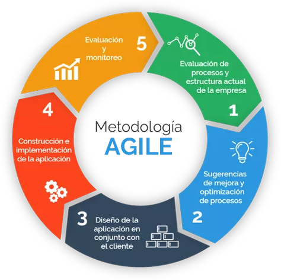

Título: Metodología Ágil
Introducción
Cada uno de estos métodos y metodologías consta de prácticas que están simplificadas y optimizadas para que sean fáciles de adoptar.
¿Qué es Agile?
Es un conjunto de métodos y metodologías que ayudan a los equipos de desarrollo a:
- • Pensar más eficazmente
- • Trabajar de manera más eficiente
- • Tomar mejores decisiones.
Agile también es una mentalidad, porque la mentalidad correcta puede marcar una gran diferencia en cómo efectivamente, un equipo utiliza las prácticas. Esta mentalidad ayuda a las personas de un equipo a compartir información entre ellos, para que puedan tomar decisiones importantes sobre el proyecto juntos. Es una filosofía que supone una forma distinta de trabajar y de organizarse. De tal forma que cada proyecto se divide en partes pequeñas que tienen que completarse y entregarse en pocas semanas. El objetivo es desarrollar productos y servicios de calidad que respondan a las necesidades de unos clientes cuyas prioridades cambian a una velocidad cada vez mayor.
La mayoría de las empresas que crean software han experimentado Agile, y aunque muchos de ellos han tenido éxito y han logrado algunas mejoras en el funcionamiento de sus proyectos, no han visto los cambios sustanciales que se sienten ágiles que les prometieron. Esto es lo que el cambio de mentalidad se trata; "Ser ágil" significa ayudar al equipo a encontrar una mentalidad.
Beneficios de Agile:
Es un conjunto de métodos y metodologías que ayudan a los equipos de desarrollo a:
- 1. Permite poner el foco en las personas: En las empresas se da más importancia a los procesos y las herramientas, sin embargo, tener empleados motivados, en un entorno adecuado y que sientan que son apoyados da mejores resultados.
- 2. Fomenta la responsabilidad dentro del equipo y aumenta la autonomía y la transparencia: El trabajo colaborativo, la fluidez en la comunicación de los equipos y la participación equitativa de todas las partes hacia un objetivo común, claro y conciso ayuda a que los equipos sean más eficaces y autónomos.

- 3. Permite dimensionar mejor los proyectos minimizando los riesgos. Las revisiones continuas permiten la adaptación al cambio de una manera más eficiente, que evita sorpresas tanto para el equipo como para el cliente respecto a los tiempos de entrega y los costes.
- 4. Facilita la priorización y toma de decisiones: Al estar todas las personas involucradas con un ritmo de trabajo constante y evitarse las jerarquías, la operativa es más rápida maximizándose los resultados buscando la eficiencia y optimización.

- 5. Mejora la experiencia del cliente: A través de feedbacks rápidos y precisos, gracias a un modelo de comunicación más colaborativo y cercano, donde el cliente es uno más del equipo, se consigue mayor nivel de satisfacción y ahorro de tiempo.
- 6. Entrega de productos y servicios en intervalos con rápida respuesta a los cambios: Proporciona una estructura flexible que permite entregar diferentes versiones en muy corto plazo de tiempo.
- 7. Incrementa el valor añadido y la predictibilidad de los resultados: Este modelo de trabajo y la cercanía con el cliente permite tener mayor conocimiento del mismo, aportando valor diferencial y evitando desviaciones sobre Plan.
Pasos de la metodología Agile
Cada uno de esos métodos y metodologías consta de prácticas que están simplificadas y optimizadas para que sean fáciles de adoptar.
- 1.Diagnóstico: Incluye el análisis de los requerimientos y la tormenta de ideas.
- 2. Diseño: Incluye la documentación del diseño y el prototipado.
- 3. Desarrollo: Incluye la construcción, las pruebas, la revisión y la clarificación. Es un proceso iterativo.
- 4. Aseguramiento de Calidad: Incluye la identificación y la resolución de defectos.
- 5. Despliegue: Incluye la puesta en producción y el soporte postventa.

Características
Mejora la satisfacción del cliente.
Esto debido a que el cliente se involucra y compromete a lo largo del proyecto evitando infinidades de malentendidos, dado que tendrá en todo momento un panorama claro del estado que guarda el proyecto.
Mejora la motivación e implicación del equipo de desarrollo.
Permiten a los miembros del equipo conocer el estado del proyecto en cualquier momento. Los compromisos son negociados y aceptados por todos los miembros del equipo y las ideas de cualquiera de sus integrantes son tomadas en cuenta.

Ahorra tiempo y dinero.
Trabaja de un modo más eficaz y vertiginoso que otras metodologías. Además, de que las metodologías ágiles ponen la atención en cumplir estrictamente con el presupuesto y los plazos pactados a la hora de definir y planificar el proyecto.
Mayor velocidad y eficiencia.
Se trabaja realizando entregas parciales pero funcionales del producto.

Mejora la calidad del producto.
La continua interacción entre los desarrolladores y los clientes tienen como objetivo asegurar que el producto final sea exactamente lo que el cliente quiere y necesita.
Alerta rápidamente errores y problemas.
En la etapa de planificación, el equipo ha presentado un análisis anticipando dando respuesta a los principales problemas técnicos que pudieran existir y se determina la velocidad con la que el equipo puede trabajar.
Conclusiones

Agile permite la recuperación de las inversiones más rápidamente, gracias a la realización de entregas tempranas el cliente puede decidir a tiempo sobre funcionalidades que no son realmente necesarias en el producto final.
En este mundo cada vez más dinámico, se hace necesario contar con metodologías flexibles, que se adapten rápidamente a los cambios del momento.

Agile permite a los equipos colaborar integradamente, poner al cliente en primer lugar, innovar, pensar en grande y aportar valor de forma global.